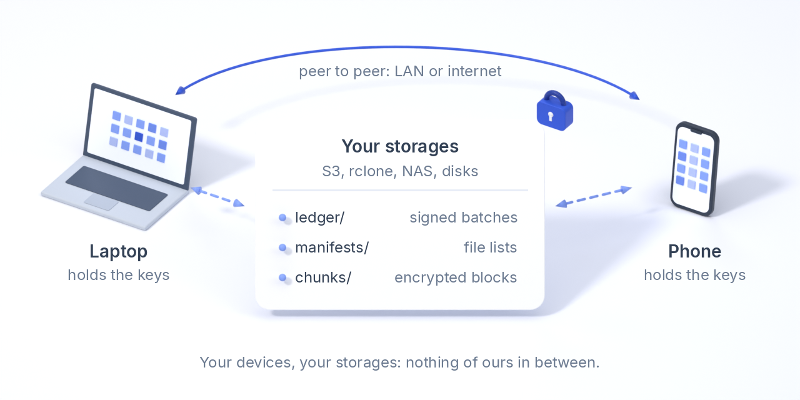
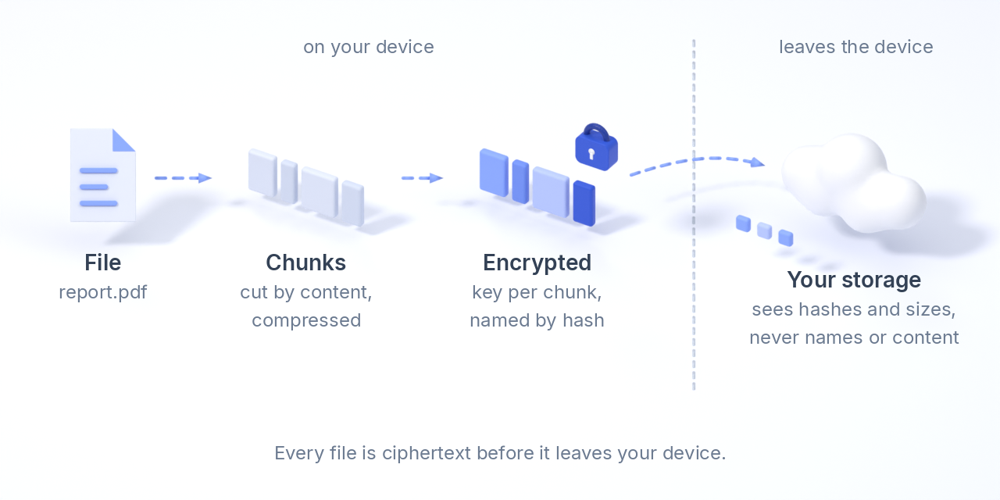
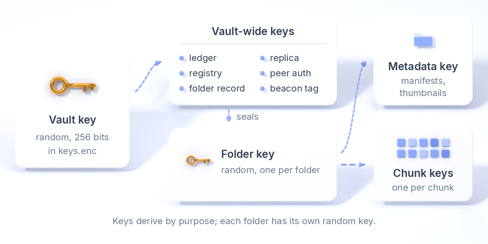
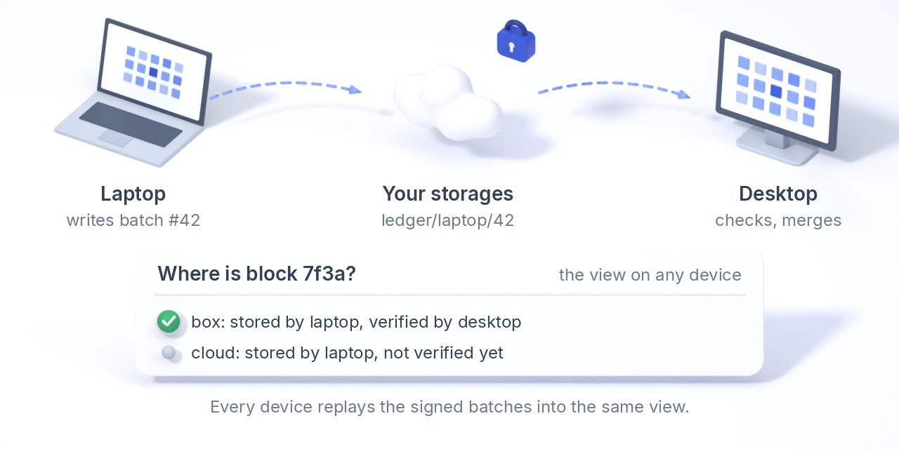
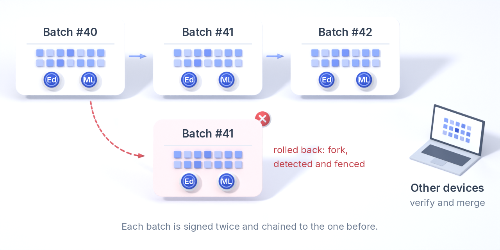
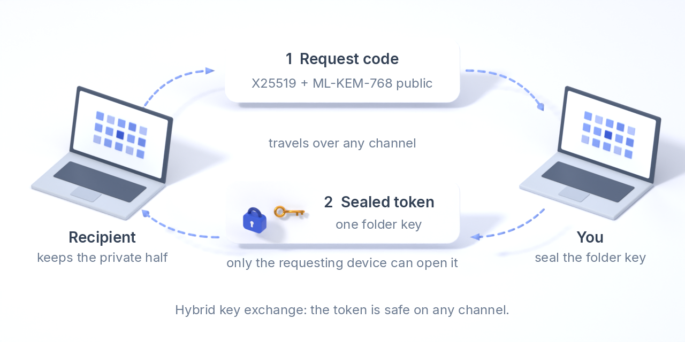
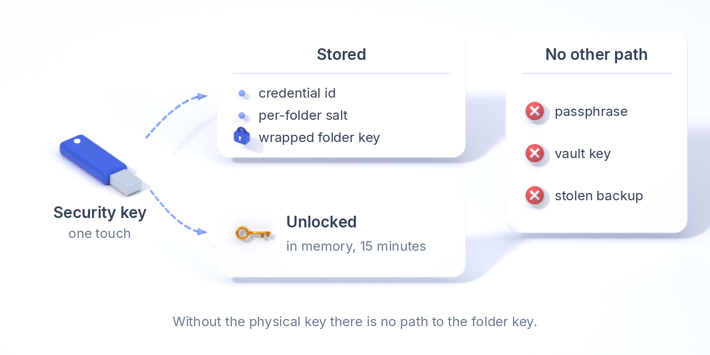
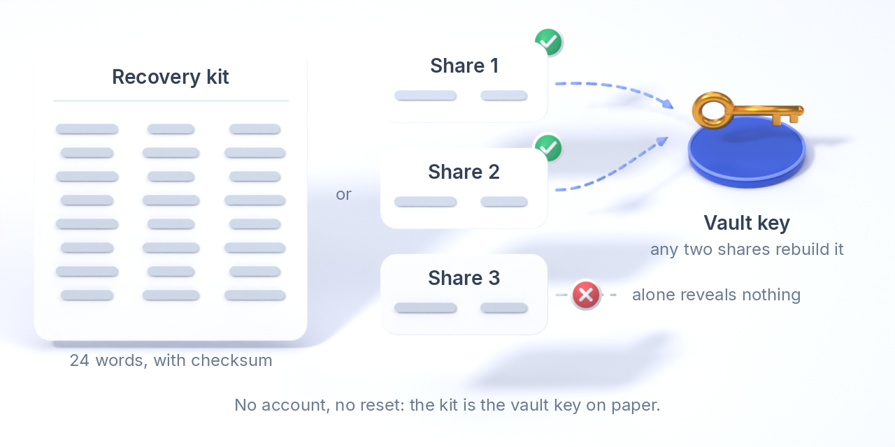

Näin Varsto toimii
Varston tekniikka mekanismi kerrallaan: miten tiedostosta tulee salattuja lohkoja, mitä avaimia on olemassa, miten allekirjoitettu kirjanpito pitää kirjaa jokaisesta kopiosta, miten laitteet synkronoivat ja löytävät toisensa ja mikä on vielä kesken.
Kaikki tässä kuvattu on toteutettu ytimessä, jonka lähdekoodi on saatavilla (crates/varsto-core), ja kuvattu kenttien tarkkuudella tallennusmuodossa. Kyse on alfaohjelmistosta: muodot voivat vielä muuttua, eikä suunnittelua tai koodia ole auditoitu. Uhkamalli ja vikamalli kertovat, miltä se suojaa ja miltä ei.
Yleiskuva

Varstossa on kahdenlaisia osia, eikä niiden välissä ole mitään meidän omaamme.
- Laitteillasi (kannettavat, pöytäkoneet, puhelimet) ovat avaimet. Ne pilkkovat tiedostot lohkoiksi, salaavat ja purkavat salauksen ja ajavat synkronointia taustapalvelussa.
- Tallennuspaikoissasi on vain salakirjoitusta: S3-yhteensopiva ämpäri, mikä tahansa rclone-etäkohde, NAS tai verkkojako, paikallinen tai irrotettava levy tai hyllyllä oleva levyvarasto. Varsto ei tarvitse niiltä muuta kuin tallennuksen, haun, listauksen ja poiston.
Jokaisessa tallennuspaikassa on samat kolme objektilajia: tiedostosisällön salatut lohkot, kunkin laitteen salatut tiedostoluettelot (manifestit) ja kunkin laitteen allekirjoitettu kirjanpito, sekä muutama pieni salattu tietue laitteista, kansioista ja säilytyssäännöistä. Jokaisella polulla on täsmälleen yksi kirjoittaja: laite kirjoittaa vain oman tunnisteensa alle, ja lohkot nimetään salakirjoituksensa tiivisteellä eikä niitä koskaan korvata. Siksi tallennuspaikat eivät tarvitse lukituksia, ja jokainen niistä toimii myös postilaatikkona: laitteet, jotka eivät ole koskaan verkossa yhtä aikaa, päätyvät silti samaan tilaan, kunhan niillä on yhteinen tallennuspaikka. Laitteet voivat myös vaihtaa lohkoja suoraan keskenään, lähiverkossa tai internetin yli.
Varsto-tiliä, -palvelinta tai -välittäjää ei ole. Jos projekti loppuisi huomenna, asennetut laitteesi jatkaisivat synkronointia tallennuspaikkojesi kautta.
Tiedostosta salatuiksi lohkoiksi

- Pilkkominen. Tiedosto pilkotaan sisällön mukaan määräytyviin paloihin, joiden koko riippuu tiedostosta: noin 256 KiB alle 32 MiB:n tiedostoille, 1 MiB 1 GiB:hen asti ja 4 MiB sitä suuremmille (liukuva tiiviste valitsee katkaisukohdat), joten keskelle tehty muokkaus muuttaa muutaman palan eikä koko tiedostoa.
- Tunniste. Jokainen pala saa tunnisteen: selvätekstinsä avainnetun BLAKE3-tiivisteen kansion deduplikointitiivisteavaimella. Samalla sisällöllä on samassa kansiossa sama tunniste kaikilla laitteilla, mikä saa deduplikoinnin toimimaan ilman verkkoyhteyttä; avain estää ketä tahansa ilman sitä testaamasta, onko sinulla jokin tunnettu tiedosto.
- Pakkaus. Pala pakataan zstd:llä, kun se säästää vähintään 5 %. Pakkaustaso on muodon vakio, joten jokainen laite tuottaa samasta palasta samat tavut.
- Salaus. XChaCha20-Poly1305 palakohtaisella avaimella ja noncella, jotka johdetaan kansioavaimesta ja palan tunnisteesta; liitetty data nimeää holvin, kansion, palan ja sen pituuden. Deterministiset avaimet ovat tässä turvallisia, koska kukin avain salaa täsmälleen yhden viestin, ja niiden ansiosta kaksi laitetta tuottaa tavu tavulta identtiset objektit keskustelematta keskenään.
- Nimeäminen. Tallennettu objekti nimetään salakirjoituksensa BLAKE3-tiivisteellä. Minkä tahansa kopion, missä tahansa, voi tarkistaa nimeään vasten ilman avainta: näin replikat, vertaiset,
fsck --verifyja automaattinen tarkistus tarkistavat kopioita, joita ne eivät pysty lukemaan.
Tunnettu kompromissi: deterministinen (konvergentti) salaus kansion sisällä tarkoittaa, että kaksi henkilöä, joilla molemmilla on kansioavain, voivat päätellä, onko heillä identtinen tiedosto, ja pakattujen palojen koot näkyvät tallennuspaikalle. Jaetussa kansiossa tämä pätee yhden avainkauden ajan; jäsenen poistaminen antaa kansiolle uuden satunnaisen avaimen, joten poistettu jäsen ei tunnista mitään sen jälkeen kirjoitettua.
Avaimet

Kaikki alkaa yhdestä satunnaisesta 256-bittisestä holviavaimesta, joka luodaan ensimmäisellä laitteella eikä sitä koskaan johdeta mistään kirjoittamastasi. Se on ainoa salaisuus, joka on säilytettävä; palautuspaketti on tuo avain paperilla.
- Kullakin laitteella holviavain ja laitteen allekirjoitusavain on tallennettu tiedostoon
keys.enc, joka on salattu avaimella, jonka Argon2id johtaa laitteen salalauseesta. Salalauseen vaihtaminen salaa vain tuon tiedoston uudelleen eikä koske mihinkään tallennuspaikassa. - Holvinlaajuiset avaimet johdetaan holviavaimesta käyttötarkoituksen mukaan: kirjanpito, laiterekisteri, kansiotietue, replikan kirjanpito, vertaistunnistus ja majakkatunniste. Yhden johdetun avaimen vaarantuminen ei paljasta muita.
- Kansiokohtaisesti satunnainen kansioavain julkaistaan muille laitteillesi salatussa kansiotietueessa. Siitä johdetaan deduplikointitiivisteavain, metatietoavain (tiedostoluettelot ja pikkukuvat) ja yksi avain palaa kohden. Yksi kansioavain avaa sen kansion eikä mitään muuta; juuri sen jakaminen luovuttaa.
- Laitekohtaisesti on allekirjoitusavain (Ed25519 + ML-DSA-65), jonka julkinen puolisko on laitteen identiteetti; laitetunniste on sen tiiviste.
Laitteen poistaminen aloittaa uuden avainkauden: uusi satunnainen holviavain sinetöidään jokaiselle jäljelle jäävälle laitteelle alla kuvatulla hybridiavaintenvaihdolla. Uudet kirjanpidon erät, tietueet, tiedostoluettelot ja lohkot käyttävät uusia avaimia, ja salattujen avainkausitietueiden ketju antaa uuden avaimen avata kaiken vanhemman. Poistettu laite löytää allekirjoitetun mitätöinnin seuraavan kerran, kun se tavoittaa tallennuspaikan, ja lopettaa; tyhjennysmääräyksen kanssa se tyhjentää myös kansionsa ja avaimensa.
Algoritmit
| Käyttötarkoitus | Algoritmi | Huomiot |
|---|---|---|
| Sisällön ja metatietojen salaus | XChaCha20-Poly1305 (AEAD) | 256-bittiset avaimet, 192-bittiset noncet. Jokaisessa salakirjoituksessa on liitetty data, joka nimeää, mikä se on, joten tallennuspaikka ei voi siirtää objektia toiseen rooliin. |
| Tiivisteet ja avainten johtaminen | BLAKE3 (avainnettu tiiviste ja derive_key) | Palatunnisteet ja tiedostotiivisteet ovat avainnettuja. Jokaisessa johdetussa avaimessa on konteksti e2ee-sync-format/0/<purpose>. |
| Salalauseesta avaimeksi | Argon2id | Vähintään 64 MiB, 3 kierrosta; satunnainen suola laitetta kohden. Salalause ei koskaan poistu laitteelta. |
| Allekirjoitukset (kirjanpito, tietueet) | Ed25519 + ML-DSA-65, hybridi | Molemmat allekirjoitukset kattavat samat tavut, ja molempien on täsmättävä. Avain, jossa on kvanttiturvallinen osa, ei koskaan hyväksy pelkkää Ed25519-allekirjoitusta. |
| Avaintenvaihto (jakaminen, uudet avainkaudet) | X25519 + ML-KEM-768, hybridi | Molemmat jaetut salaisuudet ja koko viestinvaihto kootaan yhdeksi avaimeksi; sinetöity salaisuus pysyy salassa, ellei molempia algoritmeja ole murrettu. |
| Suojausavainkansiot | FIDO2 hmac-secret | Suojausavain johtaa kosketuksen jälkeen 32-tavuisen salaisuuden tunnistetiedosta ja kansiokohtaisesta suolasta. |
| Palautuspaketti | BIP-39-sanat, Shamir yli GF(256):n | 24 sanaa tarkistussummalla; valinnaisesti 2/3-osuudet. |
Kirjanpito

Kirjanpito on Varston tapa pitää kirjaa. Jokainen laite pitää omaa vain lisäyksiä sallivaa lokia tosiasioista, jotka koskevat sen tekemisiä, eikä mikään laite koskaan kirjoita toisen lokiin. Tosiasiat ovat pieniä ja konkreettisia: ”Kirjoitin lohkon 7f3a tallennuspaikkaan, jota kutsun nimellä box”, ”Latasin lohkon 7f3a boxista ja sen tiiviste täsmäsi”, ”Julkaisin tämän kansion tiedostoluettelon version 12”.
Jokainen laite lukee kaikkien muiden laitteiden lokit tallennuspaikkojen kautta ja toistaa ne kaikki samaksi kuvaksi: mitä lohkoja on olemassa, missä kukin kopio on, kuka sen kirjoitti, kuka sen on tarkistanut ja milloin. Mihinkään siinä ei luoteta sen alkuperän perusteella: jokaisen erän on allekirjoittanut sen tehnyt laite, ja kopio lasketaan tarkistetuksi vasta, kun jokin toinen laite on tarkistanut sen.
Ilman kirjanpitoa synkronointityökalu voi vain toivoa, että sen kopiot ovat olemassa. Sen avulla Varsto osaa kertoa, kuinka monta kopiota jokaisesta lohkosta on, missä paikoissa, kuinka äskettäin kukin on tarkistettu ja mitä kukaan ei ole vielä tarkistanut.
Mitä se kirjaa
| Tapahtuma | Merkitys |
|---|---|
| Laite rekisteröity | Tämä laite liittyi holviin tällä nimellä. |
| Kansio lisätty | Tämä laite loi kansion. |
| Lohko tallennettu | Tämä laite kirjoitti salatun lohkon tallennuspaikkaan: kansio, palan tunniste, objektin nimi, koko ja tallennuspaikka. Väite, jonka vahvistaa vain kirjoittaja. |
| Lohko tarkistettu | Tämä laite latasi lohkon tallennuspaikasta, ja sen tiiviste täsmäsi sen nimeen. Kirjataan latauksissa, fsck --verify -ajossa, automaattisessa tarkistuksessa ja täysissä levytarkistuksissa. |
| Lohko laitteella | Tällä laitteella on lohkon selväteksti osana tiedostoa. |
| Tiedostoluettelo julkaistu | Tämä laite julkaisi kansion tiedostoluettelon version n tiivisteineen ja tiedostomäärineen. |
| Tallennuspaikka poistettu käytöstä | Tallennuspaikka poistettiin holvista: ennen tätä tapahtumaa siihen kohdistuneita väitteitä ei enää lasketa kopioiksi. |
Ei tiedostonimiä eikä sisältöä: lohkot tunnistetaan avainnetuilla palatunnisteilla ja salakirjoitusten tiivisteillä, ja koko erä on joka tapauksessa salattu.
Allekirjoitettu, ketjutettu ja sinetöity

Tapahtumat kootaan eriksi, tyypillisesti yksi synkronointikertaa eikä tiedostoa kohden. Erässä ovat laitetunniste, järjestysnumero (1, 2, 3, ...), laitteen edellisen erän tiiviste, looginen kello, luontiaika ja tapahtumat.
- Runko salataan XChaCha20-Poly1305:llä kirjanpitoavaimella, ja liitettynä datana ovat laitetunniste ja järjestysnumero.
- Laite allekirjoittaa tunnisteensa, järjestysnumeron ja salatun rungon tiivisteen sekä Ed25519:llä että ML-DSA-65:llä. Koska allekirjoitus kattaa salakirjoituksen tiivisteen, kuka tahansa voi tarkistaa ketjun ilman avainta.
- Allekirjoitettu erä kirjoitetaan jokaiseen tietueita säilyttävään tallennuspaikkaan polkuun
ledger/<device>/<sequence>, eikä sitä koskaan korvata.
Lukija hyväksyy erän vain, kun molemmat allekirjoitukset täsmäävät laiterekisterissä olevaan laitteen julkiseen avaimeen ja edellisen erän tiiviste täsmää. Kvanttiturvallinen allekirjoitus vie noin 3,3 kt, minkä vuoksi tapahtumat kulkevat erinä: kirjanpito kasvaa muutamalla kilotavulla synkronointikertaa, ei tiedostoa kohden.
Vaihdetaan tallennuspaikkojesi kautta
Jokainen tallennuspaikka on postilaatikko. Kun laite vahvistaa erän, se lähettää jokaisen oman eränsä, joka tallennuspaikasta puuttuu; jokaisella haulla se listaa kunkin kuuman tallennuspaikan kirjanpidon, ottaa erät, joita se ei ole nähnyt, tarkistaa ne, purkaa niiden salauksen ja säilyttää paikallisen kopion. Koska jokaisessa tallennuspaikassa on koko kirjanpito, yöllä synkronoiva kannettava ja aamulla synkronoiva puhelin näkevät saman historian koskaan kohtaamatta. Kukaan ei järjestä mitään keskitetysti: muutokset järjestää looginen (Lamport-)kello, ei seinäkello. Myös epäluotetut replikat ja henkilöt, joille jaat kansion, kirjoittavat kirjanpitoa, sinetöitynä avaimilla, jotka avaavat vain heidän osuutensa: replikan väitteet nimeävät objekteja, eivät tiedostoja, ja jäsenen väitteet koskevat vain jaettua kansiota.
Näkymä: missä kukin lohko on
Kaikkien erien toistaminen antaa jokaiselle laitteelle saman näkymän: jokaisen kansion jokaisesta lohkosta sen objektinimi ja koko, tallennuspaikat, jotka väittävät säilyttävänsä kopion, ja mikä laite väitteen esitti, mitkä laitteet ovat tarkistaneet sen siellä ja milloin, ja millä laitteilla on selväteksti. Näkymä tuntee myös kunkin laitteen uusimman tiedostoluettelon kustakin kansiosta, olemassa olevat laitteet ja kansiot sekä käytöstä poistetut tallennuspaikat. Tallennuspaikkojen nimet ovat laitekohtaisia (”box” täällä, ”primary” tuolla), joten jokaisella tallennuspaikalla on satunnainen identiteetti, jonka avulla laitteet yhdistävät toistensa väitteet.
Mihin sitä käytetään
- Lähetys vain kerran. Ennen lähettämistä laite ohittaa jokaisen tallennuspaikan, joka jo väittää säilyttävänsä lohkon, joten kahdella laitteella lisätty tiedosto lähetetään vain kerran.
- Tilan turvallinen vapauttaminen. Tiedostosta tulee paikkamerkki vasta, kun kirjanpito näyttää jokaisen sen lohkon olevan tallennuspaikassa, joka ei ole siirtolevy, ja kansion kopiosäännöt täyttyvät edelleen.
- Säilytyssäännöt. ”Vähintään kolme kopiota, joista yksi pilvessä, kukin toisen laitteen tarkistama 30 päivän sisällä” arvioidaan pelkän kirjanpidon perusteella, ja palvelu hälyttää, kun kansion tilanne heikkenee.
- Automaattinen tarkistus. Taustapalvelu valitsee kopioita, jotka muut laitteet ovat kirjoittaneet ja joita kukaan ei ole hiljattain tarkistanut, lataa ne, vertaa salakirjoituksen tiivistettä nimeen ja kirjaa tuloksen päivittäisen kiintiön puitteissa.
fsck. Vertaa kirjanpitoa siihen, mitä tallennuspaikat todella listaavat: väitteet ilman objektia, lohkot, joista ei ole kopiota missään, ja muualla tarkistetut lohkot.- Siirtolevyt. Kuljetuslevy ottaa vain ne lohkot, joita millään muulla laitteella ei vielä ole, ja vapauttaa tilan, kun molemmissa päissä ne on.
- Tallennuspaikan poistaminen. Varsto suunnittelee kirjanpidon perusteella, mitkä lohkot jäisivät alle kansion minimin, kopioi ne muualle, tarkistaa uudelleen ja vasta sitten kirjaa käytöstä poistamisen.
- Kustannukset. Tallennuspaikan kuukausikustannus on kirjanpitoon sille kirjattujen tavujen määrä kertaa sen hinta.
- Laitteen poistaminen. Mitätöinti nimeää poistetun laitteen viimeisen huomioon otettavan erän; kaikki, mitä laite allekirjoittaa myöhemmin, jätetään pois jokaisesta näkymästä, ja vain niiden erien ilmoittamat tiedostoluettelot yhdistetään.
Haarat ja palautetut laitteet
Koska jokainen laite numeroi ja ketjuttaa omat eränsä, historiaa ei voi kirjoittaa hiljaa uudelleen. Kaksi eri erää samalla laitteella ja järjestysnumerolla tai erä, jonka edellisen erän tiiviste ei täsmää, on haara: jokainen laite, joka näkee sellaisen, merkitsee kyseisen laitteen haarautuneeksi, ja fsck raportoi sen. Tavallinen syy on vanhasta varmuuskopiosta palautettu laite tai kloonattu levy, joka jatkaisi järjestysnumerosta, jonka laitteen uudempi versio on jo käyttänyt. Kun laite löytää omalla identiteetillään eriä, joita se ei ole kirjoittanut, se eristää itsensä: se lopettaa allekirjoittamisen ja lähettämisen, kunnes se rekisteröidään uudelleen uutena laitteena, jotta saman identiteetin kaksi erkanevaa kopiota eivät koskaan molemmat kirjoita historiaa.
Rajoitukset
- Allekirjoitus todistaa, että laite ilmoitti tallentaneensa lohkon, ei sitä, että lohko on yhä tallessa. Siksi kopio lasketaan tarkistetuksi vasta, kun toinen laite on tarkistanut sen; haaste–vastaus-tyyppistä todistetta tallennuksesta ei vielä ole.
- Tallennuspaikkaa, joka tarjoilee vanhempaa mutta kelvollista osaa kirjanpidosta, eivät allekirjoitukset paljasta; se näkyy vasta, kun toisella tallennuspaikalla tai laitteella on uudempia eriä. Palautushyökkäysten havaitseminen on suunnittelutavoite, ei testattu ominaisuus.
- Kirjanpito kasvaa jokaisella synkronoinnilla. Versiosta alpha.8 lähtien laitteet kirjoittavat tarkistuspisteitä ja karsivat kuitattuja eriä, joten tallennettu määrä pysyy rajattuna; jaettujen kansioiden jäsenet ja replikat säilyttävät yhä jokaisen erän.
- Tarkistusajat tulevat laitteiden kelloista: pahasti väärässä oleva kello voi aiheuttaa vääriä hälytyksiä, vaikka se ei muutakaan muutosten järjestystä.
- Tallennuspaikat näkevät kirjanpitohakemistojen määrän (laitteidesi lukumäärän) sekä erien koon ja ajoituksen.
Tiedostoluettelot ja synkronointi
Kirjanpito kertoo, missä lohkot ovat; manifestit kertovat, mitä tiedostot ovat. Muutoksen jälkeen laite julkaisee koko näkymänsä kansiosta uutena manifestina: jokainen polku kokoineen, muokkausaikoineen, sisältötiivisteineen, lohkoluetteloineen ja versiovektoreineen (kunkin laitteen viimeisimmän muutoksen kello). Se salataan kansion metatietoavaimella ja ilmoitetaan kirjanpidossa. Muut laitteet hakevat manifestit, joita ne eivät ole nähneet, ja yhdistävät ne polku polulta:
- versio, joka sisältää toisen, voittaa; identtinen sisältö yhdistyy;
- muokkaus voittaa samanaikaisen poiston, joten poisto ei koskaan tuhoa kenenkään työtä;
- kahdesta erilaisesta samanaikaisesta muokkauksesta valitaan deterministinen voittaja (suurempi kello, sitten laitetunniste), ja toinen versio säilytetään nimellä
name.conflict-<device>-<clock>.ext, joten molemmat laitteet päätyvät samaan tilaan ilman uutta kierrosta.
Poistetut tiedostot menevät paikalliseen roskakoriin, eikä niitä koskaan poisteta suoraan. Taustapalvelu valvoo kansioitasi ja synkronoi sekunneissa muutoksesta. Valikoivat kansiot näyttävät jokaisen tiedoston mutta pitävät paikkamerkkejä niiden tiedostojen kohdalla, joita et ole hakenut, ja hakevat tiedoston, kun avaat sen. Manifestit ovat nykyään täysiä näkymiä; hyvin suuret kansiot tarvitsevat inkrementaalisia.
Vertaisyhteys
Laitteet vaihtavat lohkoja myös suoraan keskenään. Koska salaus on kansion sisällä determinististä, tiedoston omaava laite voi tarjota täsmälleen saman objektin, joka tallennuspaikassa on, ja vastaanottaja tarkistaa sen nimeään vasten kuten minkä tahansa tallennuspaikan kopion. Lohkoa tarvitseva laite kysyy ensin vertaisiltaan ja vasta sitten tallennuspaikoilta, ja se jakaa peräkkäiset lohkot vastaavien vertaisten kesken.
- Toistensa löytäminen. Lähiverkossa multicast-majakka, joka kantaa avainnettua tunnistetta eikä holvin tunnistetta. Internetin yli salattu kohtaamistietue tallennuspaikoissasi, jossa ovat kunkin laitteen osoitteet.
- NATien ylittäminen. Lähiverkossa HTTP, internetin yli QUIC UDP:n päällä: STUN kertoo laitteelle sen julkisen osoitteen, molemmat osapuolet lyövät reiät, ja kun se ei onnistu, jokin oma tavoitettava laitteesi toimii välittäjänä. Toimittajan välittäjää ei ole.
- Kuka saa yhdistää. Jokaisella laitteella on oma varmenteensa, jonka tiiviste on kiinnitetty sen tietueeseen; jokaisessa pyynnössä on lisäksi lyhytikäinen todiste, joka on tehty holvin vertaistunnistusavaimella. Tuntematon ei saa mitään, ja poistettu laite pudotetaan vertaisluettelosta.
Testattu localhostissa, ylläpitäjän omissa verkoissa ja kolmen laitteen kokoonpanolla NATien yli. Kahta symmetristä NATia ei voi lävistää, joten ne turvautuvat välittäjään, joka vaatii holviin yhden tavoitettavan laitteen (kotipalvelin, VPS, edelleenohjattu portti); socketit ovat vain IPv4:ää.
Kuinka nopea. Suorituskykymittaukset mittaavat latauksia Pariisin, Amsterdamin ja Varsovan välillä, vertaisyhteydellä S3-ämpäriä vastaan, menetelmineen, lukuineen ja sen kertoen, mikä on vielä hidasta.
Siirtoyhteys ja paikallinen käyttöliittymä. Objektit ovat salakirjoitusta jo ennen kuin ne lähtevät laitteelta, joten siirtoyhteys ei lisää toista kerrosta pelkän kerroksen vuoksi: S3:a puhutaan HTTPS:n yli Signature Version 4:llä, rclone-etäkohteet käyttävät rclonen omaa määritystä, ja S3-salaisuus säilytetään salatussa tiedostossa. Työpöytäkäyttöliittymää tarjoillaan vain osoitteessa 127.0.0.1, jokaisessa pyynnössä on istuntokohtainen tunniste, Host-otsake tarkistetaan, ja sivu toimii tiukan Content Security Policyn alaisena.
Mitä kukin osapuoli näkee
| Osapuoli | Näkee | Ei näe |
|---|---|---|
| Tallennuspalvelun tarjoaja (ämpäri, NAS, levy, rclone-etäkohde) | Objektien nimet (salakirjoitusten tiivisteet), objektien koot, kuinka usein kirjoitat ja luet, laitteidesi lukumäärän kirjanpitohakemistojen määrästä. | Tiedostonimiä, sisältöä, kansioiden nimiä, mitkä lohkot kuuluvat mihinkin tiedostoon, selvätekstisi tiivistettä. |
| Epäluotettu replika (ystävän NAS) | Saman kuin tallennuspalvelun tarjoaja, ja lisäksi sen, että objektit täsmäävät nimiinsä. Se allekirjoittaa omat väitteensä vain replikoille tarkoitetulla avaimella. | Mitään sisältöä, nimeä tai tiedostoluetteloa; se ei koskaan saa kansioavainta eikä holviavainta. |
| Vertainen lähiverkossa tai internetissä | Sen, että jokin laite pyytää objekteja nimeltä, kun laite on ensin todistanut omaavansa holvin vertaistunnistusavaimen. | Mitään ilman tuota avainta: tuntematon ei saa yhtään objektia, eikä lähiverkon majakka nimeä holvia. |
| Henkilö, jolle jaat kansion | Sen kansion: jokaisen siinä olevan tiedoston ja laitteidesi allekirjoitetut väitteet siitä. | Muita kansioita, holviavainta, laiterekisteriäsi. |
| Tekoälyavustaja MCP-palvelimen kautta | Kansiot, joihin annoit luvan, vain lukuoikeuksin, ellet toisin määrännyt. | Kansioita, joihin et antanut lupaa; Strongroom-kansioita ei koskaan. |
| Varas, jolla on lukitsematon kannettavasi | Kaiken, mitä tavallisessa kansiossa on, niin kauan kuin laite on lukitsematon. | Strongroom-kansioita ilman suojausavaintasi; mitään, mitä on kirjoitettu sen jälkeen, kun poistit laitteen toiselta laitteelta, paitsi muiden kanssa jaetuissa kansioissa. |
Kansion jakaminen

Vastaanottajan laite luo hybridiavainparin (X25519 + ML-KEM-768) ja tulostaa pyyntökoodin, jossa on sen julkinen puolisko. Laitteesi kapseloi molemmille puoliskoille, johtaa yhden avaimen molemmista jaetuista salaisuuksista ja viestinvaihdosta ja salaa sillä kansioavaimen. Syntyvän tunnisteen voi lähettää mitä tahansa kanavaa pitkin: vain pyytänyt laite voi avata sen, ja se avaa yhden kansion.
Ennen sinetöintiä vertaatte molemmat sormenjälkeä: kuutta sanaa, jotka johdetaan pyyntökoodista ja siinä olevasta nimestä. Luette ne toisillenne puhelussa tai kasvokkain; matkalla vaihdettu koodi näyttää eri sanat, ja vastaanottajan laite hylkää tunnisteen, jonka vahvistetut sanat eivät ole sen omat.
Sen jälkeen vastaanottajan laite kirjoittaa kansiolle oman kirjanpitonsa, sinetöitynä kansioavaimesta johdetulla avaimella: kumpikin osapuoli näkee toisen väitteet tuosta kansiosta eikä mitään muuta. Jäsenen poistaminen tai sellaisen tunnisteen mitätöinti, jota kukaan ei ole vielä hyväksynyt, antaa kansiolle uuden satunnaisen avaimen: laitteesi ja jäljelle jäävät jäsenet saavat sen (sinetöitynä kunkin jäsenen omalle avaimelle), kaikki siitä eteenpäin kirjoitettu on sen alla, ja poistetun jäsenen myöhemmät muutokset jätetään huomiotta. Mitä he ovat jo saaneet, pysyy heille luettavana; avainta ei voi kutsua takaisin.
Strongroom: kryptografinen, ei pelkkä valintaikkuna

Strongroom-kansion avain ei ole koskaan levossa. Luotaessa suojausavain tekee tunnistetiedon ja tuottaa siitä ja satunnaisesta kansiokohtaisesta suolasta 32-tavuisen salaisuuden (FIDO2 hmac-secret). Varsto käärii kansioavaimen tuon salaisuuden alle ja tallentaa vain tunnistetiedon tunnisteen, suolan ja käärityn avaimen. Avaaminen toistaa kosketuksen ja pitää avainta muistissa määräajan (oletuksena 15 minuuttia), minkä jälkeen se unohtaa avaimen. Kansioavaimeen ei pääse ilman fyysistä avainta: ei salalauseen, holviavaimen eikä varastetun varmuuskopion kautta. Varasuojausavaimet saavat oman käärenteensä samasta kansioavaimesta. Olemassa olevan kansion muuntaminen antaa sille uuden tunnisteen ja avaimen, salaa sen uudelleen ja poistaa vanhan salakirjoituksen; Strongroomin avaimen vaihtaminen tekee saman uudella avaimella, joka kääritään jokaiselle rekisteröidylle suojausavaimelle, siltä varalta, että jokin avain on voinut jäädä jonkun haltuun.
Salalauseet ja palautuspaketti

Laitteen salalause kulkee Argon2id:n läpi ja avaa tiedoston keys.enc; taustasovellus voi säilyttää sen käyttöjärjestelmän avainnipussa, jotta palvelu avautuu itsestään kirjautumisen jälkeen. Salalauseen menettäminen vie kyseisen laitteen kopion avaimista, ei holvia: toinen laite tai palautuspaketti rekisteröi uuden.
Palautuspaketti tulostaa holviavaimen 24 BIP-39-sanana (väärin kopioitu sana jää kiinni tarkistussummasta) ja pyydettäessä kolme Shamir-osuutta, joista mitkä tahansa kaksi rakentavat avaimen uudelleen, kun taas yksi yksinään ei paljasta mitään. Tiliä, avaimen talletusta tai nollausta ei ole: palautuspaketti on tapa kantaa vastuu. Tulosta uusi palautuspaketti laitteen poistamisen jälkeen, koska vanhassa on vanha avain.
Mikä on kesken
- Ei auditoitu. Algoritmit ovat standardeja ja kirjastot tunnettuja Rust-toteutuksia, mutta ulkopuolinen kryptografi ei ole katselmoinut kokonaisuutta, ja tallennusmuoto voi vielä muuttua.
- Metatiedot. Tallennuspaikat näkevät objektien koot, kirjoitus- ja lukuhahmot, laitteiden lukumäärän ja suunnilleen lohkojen määrän. Täytettä ja peiteliikennettä ei ole toteutettu.
- Konvergentti salaus kansion sisällä antaa kansioavaimen muille haltijoille mahdollisuuden todeta identtiset tiedostot.
- Laitteen poistaminen suojaa sen jälkeen kirjoitetun, ei sitä, mitä laitteella jo oli: olemassa olevaa dataa ei salata uudelleen, jaetut ja Strongroom-kansiot pitävät avaimensa, eikä tallennuspaikkojen tunnistetietoja vaihdeta. Kunnes toinen tekijä on olemassa, mikä tahansa laitteistasi voi poistaa minkä tahansa toisen (holvissa, jossa on organisaatio, vain ylläpitäjät voivat).
- Jaetun kansion jäsenen poistaminen suojaa sen jälkeen kirjoitetun; tallennuspaikka, johon molemmat ylettyvät, pysyy hänelle kirjoitettavana, kunnes muutat sen käyttöoikeuksia.
- Kirjanpidolla ei ole todistetta tallennuksesta, palautushyökkäysten havaitsemista ei ole testattu, ja tarkistuspisteet ja karsinta (alpha.8) rajaavat sen kokoa vain holvin laitteilla: jaettujen kansioiden jäsenet ja replikat säilyttävät yhä jokaisen erän.
- Sijoittelu. Kansion voi kirjoittaa valittuihin tallennuspaikkoihin tai paikkoihin, ja lohkoja voi siirtää tallennuspaikkojen välillä (jolloin käyttämättömistä tiedostoista säilytetään vain kylmä kopio). Tiedostoja, joiden lohkot ovat vain kylmätallennuksessa, ei haeta ennen kuin siirrät ne takaisin, ja versiota 0.0.1-alpha.8 tai vanhempaa käyttävät laitteet lopettavat synkronoinnin, kun siirto on kirjattu.
- Strongroom suojaa kansioavaimen, ei tiedostoa, jonka haet ja jätät levylle; palautuspaketti ei kata Strongroom-kansioita.
- Holviavain on yksittäinen salaisuus. Säilytä palautuspakettia useammassa kuin yhdessä paikassa.
Kenttätason yksityiskohdat, tavuasettelut ja versiosäännöt: tallennusmuoto, avainhierarkia, kirjanpidon allekirjoitusmuistiinpanot, tietoturvaperiaatteet, vikamalli.